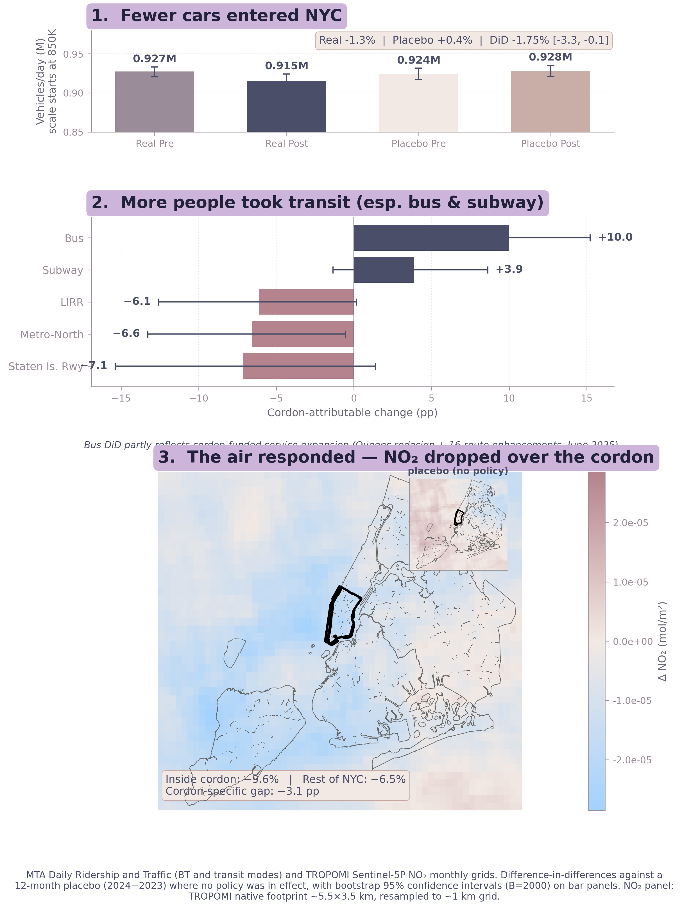

What the cordon actually did.

A small reduction in vehicles entering Manhattan via the MTA crossings (−1.75 pp). A much larger increase in transit ridership, particularly buses (+10.0 pp). A modest but specific NO₂ drop directly over the cordon (~3 pp) that the placebo year confirms is not background drift. And no spillover to taxis at the cordon edge.
The mechanism that fits the four chapters is not "the cordon kept cars off the road." It is "the cordon raised the cost of driving, and the toll revenue funded the bus service that absorbed most of the people who would otherwise have driven." A price plus a substitute, not a wall.
What changed from v1.
The earlier version of this site reported a +160% rise in median taxi-zone pickups and a −22% pollution drop. Both numbers were real in the sense the raw data showed them. Neither survives the placebo year. The taxi growth was largely yellow-fleet clawback against rideshare; the pollution number resolves to the smaller, cleaner ~3 pp cordon-specific NO₂ gap. The "everything got busier" framing gives way to the modal-shift story.
Two reasons it matters whether the model travels.
First: a corridor without good transit alternatives wouldn't get the big modal-shift number. Most of the cordon's work happened through the transit network, not through the toll alone. Second: the absence of taxi spillover suggests substitution onto a worse alternative — a more expensive, more emissions-intensive private trip — was small enough not to swamp the effect. Neither condition is guaranteed elsewhere.
The cordon did real work, of a smaller and more specific kind than its headlines on either side suggested. The work it did landed mostly on the transit it funded — which is the design the policy was sold on, even if the magnitudes are quieter than the messaging.
← Previous · The Spillover That Wasn't